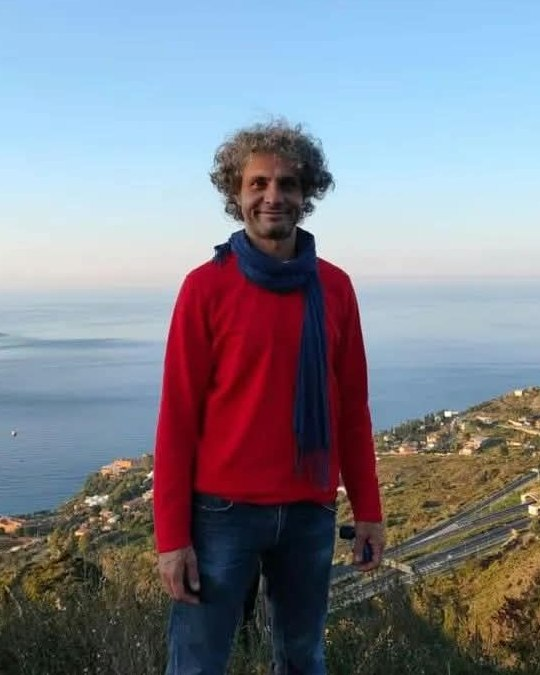

Nel ricordo di
Chi era Francesco Talia?

Francesco era un giovane profondamente legato alla sua terra, alla Calabria e alle sue tradizioni, che amava raccontare, custodire e valorizzare con orgoglio.
Da sempre impegnato nel sociale e nella vita culturale del territorio, ha lasciato il segno attraverso numerose iniziative, progetti ed eventi, animati dalla convinzione che la cultura, la musica e la condivisione potessero creare comunità e avvicinare le persone.
La musica è stata una delle grandi passioni della sua vita. Era il suo pane quotidiano: attraverso l’attività svolta nel suo locale promuoveva la musica dal vivo, incontrando, sostenendo e offrendo spazio a nuovi talenti. Promotore di festival e iniziative in cui arte e musica erano protagoniste, Francesco era una persona curiosa, appassionata e animata da un’inesauribile sete di conoscenza. Con lui era impossibile annoiarsi: amava dialogare, confrontarsi e immaginare sempre nuovi progetti.
Ma ciò che più colpiva di lui era la sua umanità. Francesco possedeva una rara capacità di ascoltare. Chiunque trovava in lui uno sguardo attento e privo di giudizio. Aveva un profondo rispetto per l’altro, per le differenze, per chi viveva situazioni di fragilità o si trovava ai margini. Sapeva accogliere le persone con semplicità e autenticità, facendo sentire ciascuno compreso e rispettato.
Negli ultimi tre anni della sua vita ha affrontato la malattia con grande coraggio, e anche nei momenti più difficili non ha mai smesso di sorridere.
Francesco credeva nelle persone, prima ancora che nelle idee. Ed è forse per questo che il suo ricordo continua a generare legami, progetti e nuovi orizzonti.
 Ostinati Orizzonti
Ostinati Orizzonti